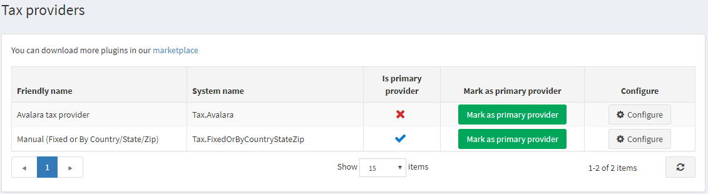
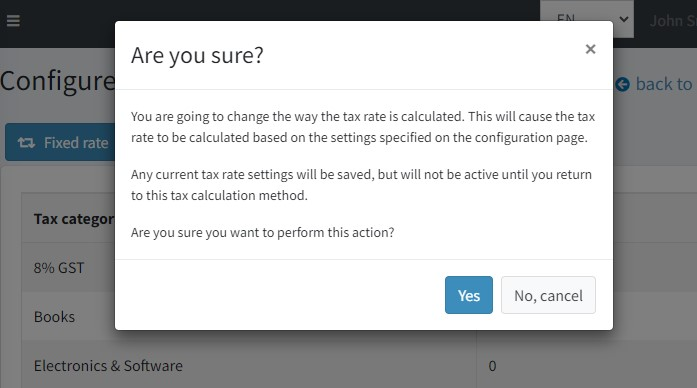
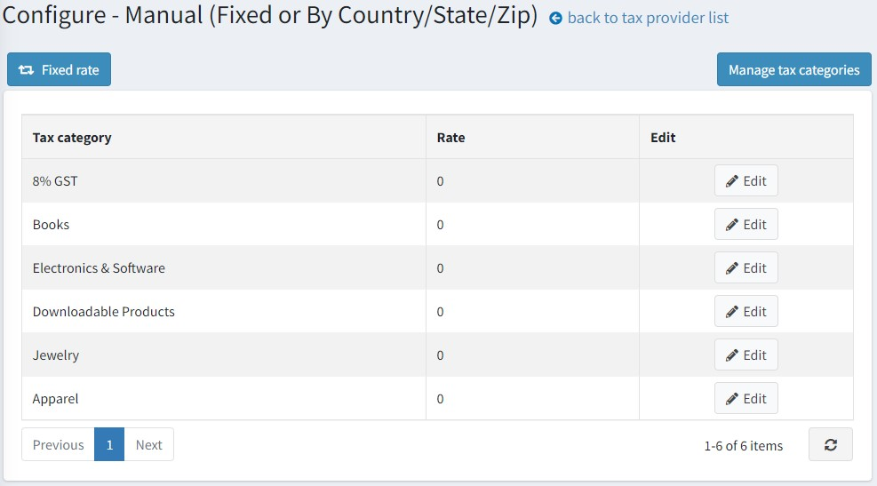
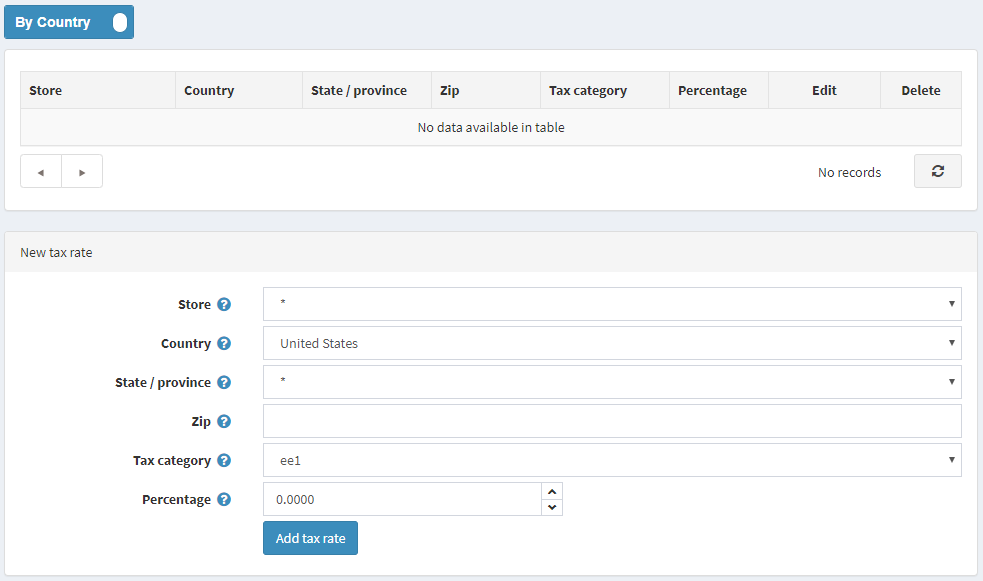
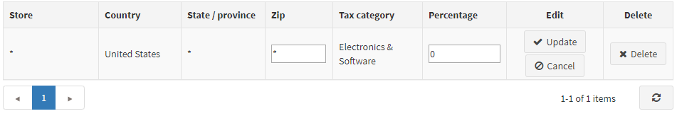

手動設定（固定費率或依國家/州/郵遞區號）
若要設定「手動設定（固定費率或依國家/州/郵遞區號）」稅額提供者，請前往 設定 → 稅額提供者。

在 手動設定（固定費率或依國家/州/郵遞區號） 提供者列中，點擊 設定 以編輯稅率。 您可以點擊左上角的對應按鈕，在 固定費率 稅額計算與 依國家/州/郵遞區號 稅額計算之間進行切換。 若要管理稅務分類，請點擊右上角的 管理稅務分類 按鈕。
固定費率
點擊頁面頂部的 依國家 按鈕，將編輯器切換至 固定費率 模式。

請注意，當您在 固定費率 與 依國家 模式之間切換時，稅務規則將會套用當前設定頁面上所顯示的規則。

在此頁面上，您可以查看預先建立的稅務分類。點擊每個分類旁的 編輯，並輸入百分比稅率。接著點擊 更新 按鈕。
請確保您的商品已在各自的 商品頁面 上指派了稅務分類。

Note
本節僅顯示預先建立的稅務分類。點擊 管理稅務分類 按鈕可編輯稅務分類，或參考此處了解如何管理稅務分類：設定稅務分類。
依國家
點擊頁面頂部的 固定費率 按鈕，將編輯器切換至 依國家 模式。

請依照下列方式定義新的稅率：
- 選擇要定義此費率的 商店。選擇 * 可將此費率套用到所有商店。
- 選擇要定義此稅率的 國家。
- 選擇要定義此稅率的 州/省。若選擇星號 (*)，則此稅率將套用到選定國家內的所有顧客，不論其州別為何。
- 輸入定義此稅率區域的 郵遞區號。若此欄位留空，則此稅率將套用到選定國家或州內的所有顧客，不論其郵遞區號為何。
- 選擇要套用此稅率的 稅務分類。
- 在 百分比 欄位中，輸入所需的百分比。
點擊 新增稅率。新的稅率將顯示如下：

Note
本節僅顯示預先建立的稅務分類。點擊 管理稅務分類 按鈕可編輯稅務分類，或參考此處了解如何管理稅務分類：設定稅務分類。
設定稅務分類
若要定義稅務分類，請前往 設定 → 稅務分類。系統將顯示 稅務分類 視窗：

若要新增稅務分類，請在面板底部輸入分類 名稱 以及此稅務分類的 顯示順序。在 顯示順序 欄位中，數值 1 代表列表的最上方。接著點擊 新增記錄 以儲存新的稅務分類。